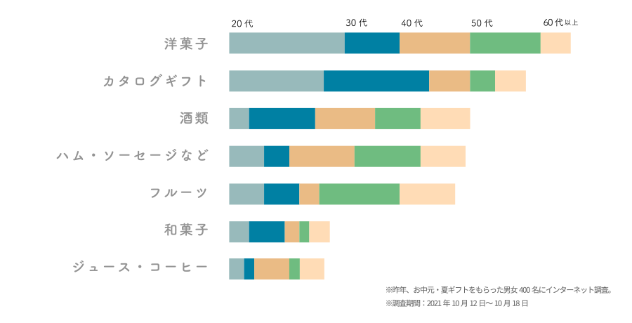
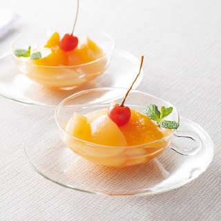
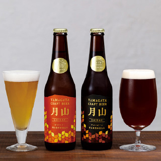
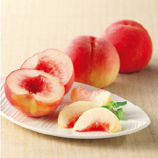
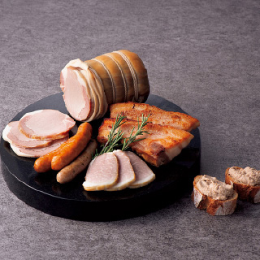
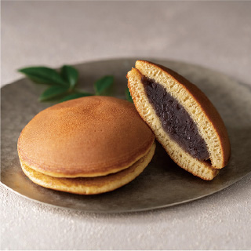
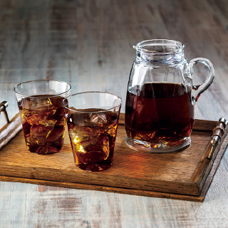

＼もらってうれしい／お中元・夏ギフトランキング2022

-
1位:洋菓子

いつでも贅沢フルーツ
4,320円（税込）〜大正12年「さくらんぼ缶詰」を製造して以来、フルーツ缶詰及び瓶詰を製造してきた〈小林食品〉が手がける逸品。選りすぐった果実の熟度を、ひとつひとつ丁寧にチェックして作られています。
-
2位:酒類

月山クラフトビール
3,300円（税込）〜ドイツやチェコ産の麦芽とホップ、そして名峰・月山の湧水のみを使い、ドイツのカスパー・シュルツ社の醸造機器を使って醸造。非熱処理のため無濾過の酵母が生きるビールです。
-
3位:フルーツ

高級 桃
5,400円（税込）〜「ギフトのプロ」、リンベルが日本全国の有名産地から厳選した、高品質で安心・安全な桃。全て、「食べごろ」を見極めて、産地から直送いたします
-
4位:ハム・ソーセージなど

無塩せきハム・ソーセージ
4,320円（税込）〜東北のハム・ソーセージ作りの草分け的存在『東北ハム』が」作る逸品。「無塩せき」、第三群の食品添加物（着色料、保存料、発色料、増粘多糖類など）は不使用です。
-
5位:和菓子

文明堂 至匠のどら焼き
3,240円（税込）〜通常より卵黄を増やし、和三盆糖を加えてふんわりと焼きあげた生地で、北海道産小豆を煮込んだ粒餡を挟みました。しっとりとした皮によく馴染む餡のハーモニーをお楽しみください。
-
6位:ジュース・コーヒー

デカフェコールドブリュー
3,240円（税込）超臨界二酸化炭素除去法で、カフェインのみを除去したカフェインレスコーヒー。お手軽にスペシャリティコーヒー豆の風味豊かな水出しコーヒーが楽しめます。